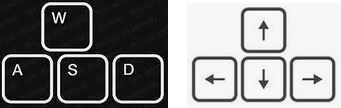

BulldozerPIXI is a half-baked recreation of the Bulldozer game series created by John 'FlyMan' Hattan (The Code Zone) - a variation of Sokoban. The aim of this project was to make my childhood favourite, playable on a modern web browser and even on mobile devices. It has recently come to my attention, that the updated game series by the original author is available fully-featured for mobile platforms at https://www.thecodezone.com/game/bulldozer.html.
The objective is to push the boulders onto the bullseye targets without getting them stuck on the tilemap. While the game concept is simple, some advanced map levels can be incredibly challenging. BulldozerPIXI is best played on a desktop or laptop but can be played on modern smartphones with a large enough browser viewport. You can move the bulldozer character up(W or Up-Arrow keys), down(S or Down-Arrow keys), left(A or Left-Arrow keys) or right(D or Right-Arrow keys). If playing on a mobile device, you are limited to the onscreen arrow-key buttons.

Tilemap graphics and map data were taken from the BulldozerAHK project by Weston Campbell. Check out his awesome implementation here.